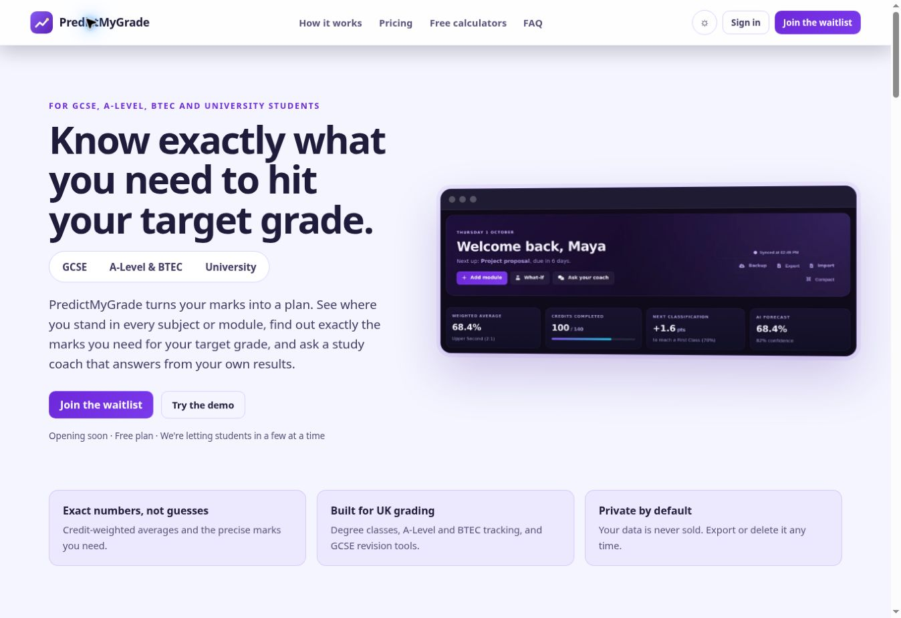
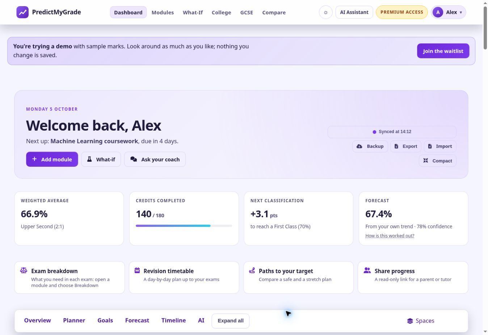
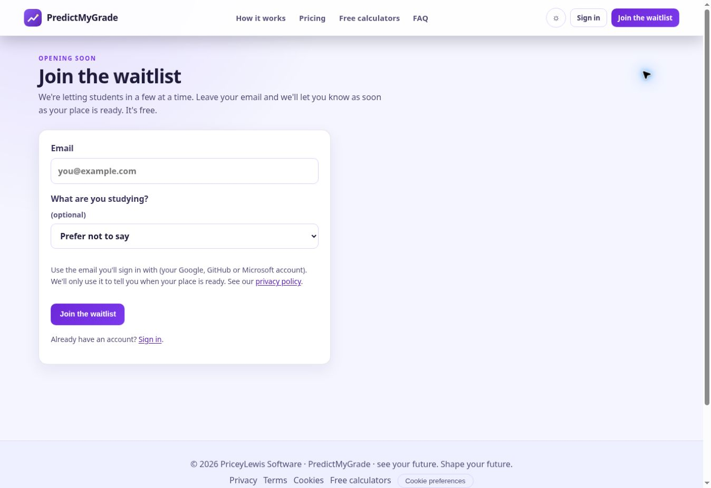

PredictMyGrade
An academic analytics product that brings grade tracking, progress insights, forecasting and study planning into one connected experience. Access is opening gradually, and users can join the waitlist now.



The idea
Students need more than a single grade calculation. PredictMyGrade brings academic progress and study planning together to help students understand where they stand and explore what to work towards next.
Product overview
- Academic tracking across university, college and GCSE study.
- Progress dashboards, grade targets and what-if planning.
- Study goals, deadlines and planning tools.
Visit the product website for current features, or join the free waitlist to hear when your place is ready.
My contribution
I developed the product across its user experience and application behaviour, connecting academic tracking, planning and progress tools into a coherent student experience.
Explore PredictMyGrade
PredictMyGrade is now featured here as a live product. Its source code is private and is not distributed through this portfolio.
Visit PredictMyGrade ↗